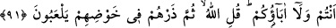
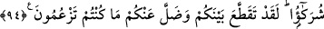

ALLAH’I GEREĞİ GİBİ TANIMAK
91. (Yahudiler) Allah’ı gereği gibi tanımadılar. Çünkü “Allah hiçbir beşere bir şey
indirmedi” dediler. De ki: Öyle ise Musa’nın insanlara bir nûr ve hidayet olarak
getirdiği Kitab’ı kim indirdi? Siz onu kâğıtlara yazıp (istediğinizi) açıklıyor, çoğunu
da gizliyorsunuz. Sizin de atalarınızın da bilemediği şeyler (Kur’an’da) size
öğretilmiştir. (Rasûlüm) sen “Allah” de, sonra onları bırak, daldıkları bataklıkta
oynaya dursunlar!
92. Bu (Kur’an), Ümmü’l-kurâ (Mekke) ve çevresindekileri uyarman için sana
indirdiğimiz ve kendinden öncekileri doğrulayıcı mübarek bir kitaptır. Âhirete
inananlar buna da inanırlar ve onlar namazlarını hakkıyla kılmaya devam ederler.
93. Allah’a karşı yalan uydurandan yahut kendisine hiçbir şey vahyedilmemişken
“Bana da vahyolundu” diyenden ve “Ben de Allah’ın indirdiği âyetlerin benzerini
indireceğim” diyenden daha zalim kim vardır! O zalimler, ölümün (boğucu)
dalgaları içinde, melekler de pençelerini uzatmış, onlara: “Haydi canlarınızı
kurtarın! Allah’a karşı gerçek olmayanı söylemenizden ve O’nun âyetlerine karşı